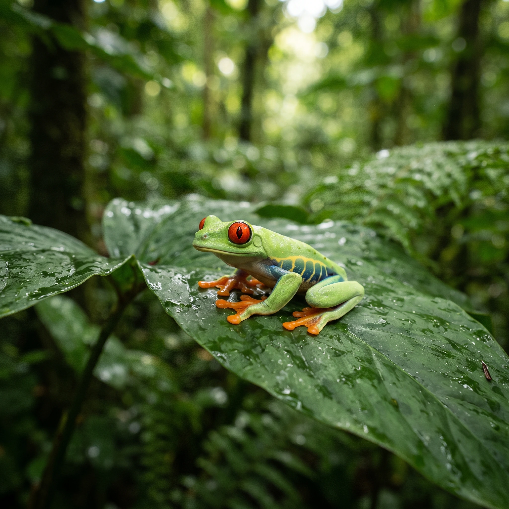
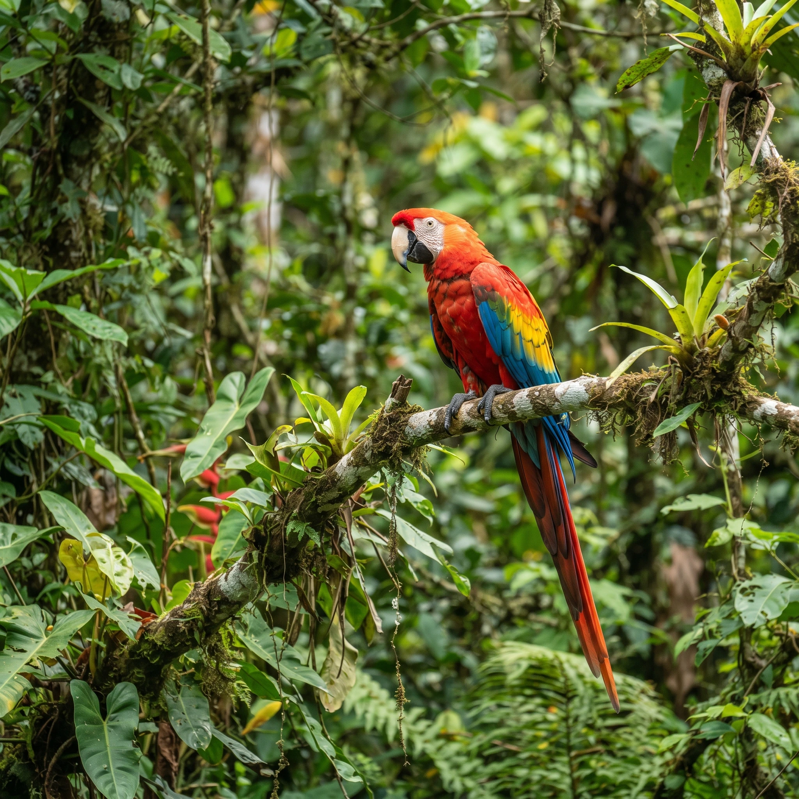
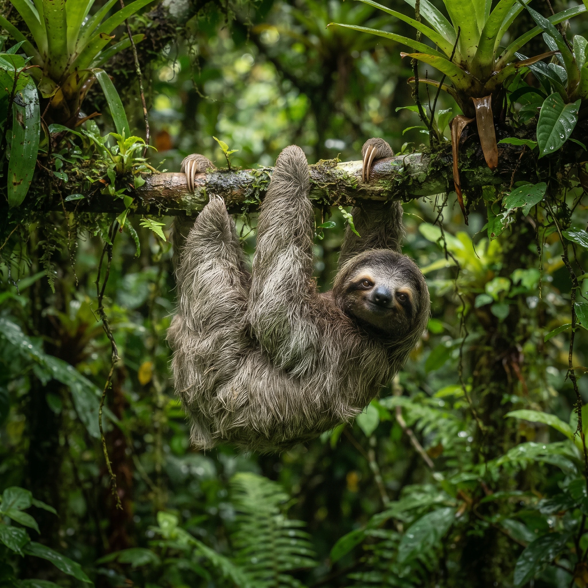
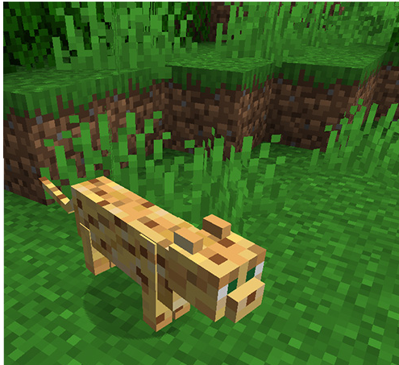
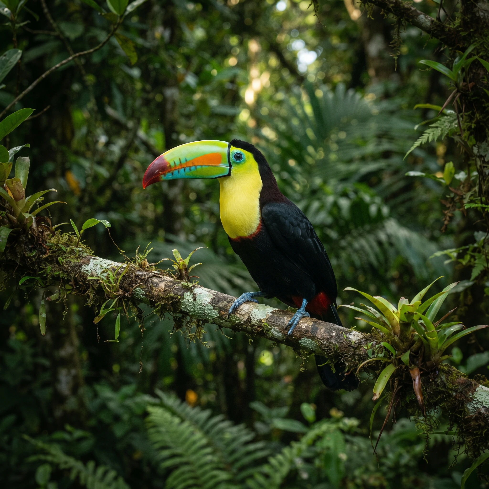
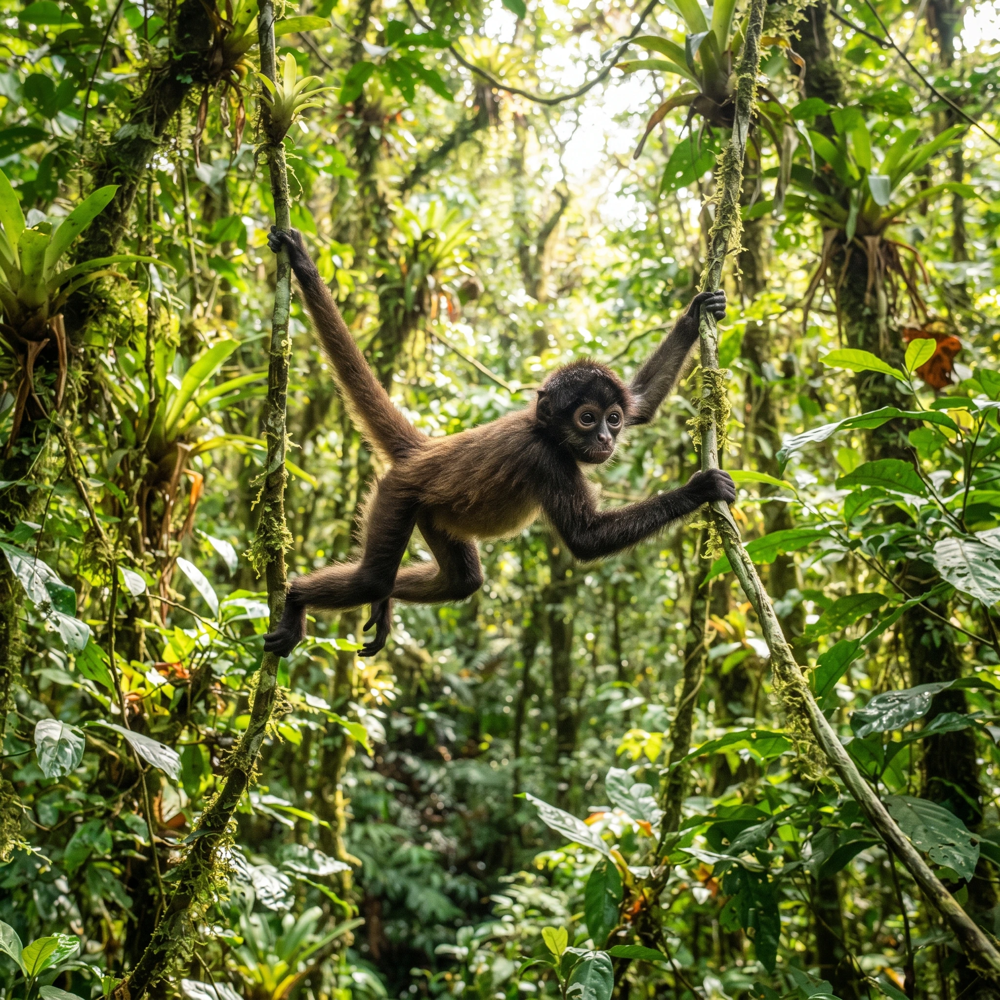
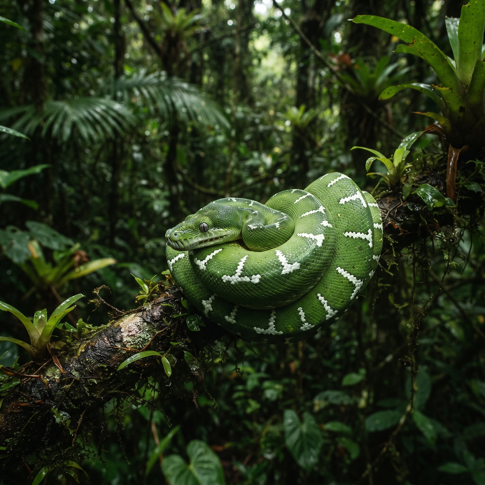
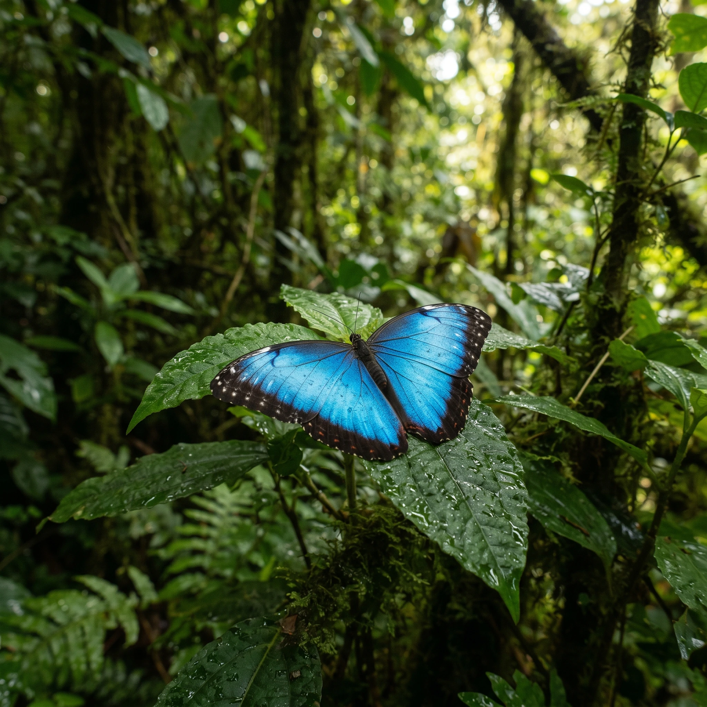
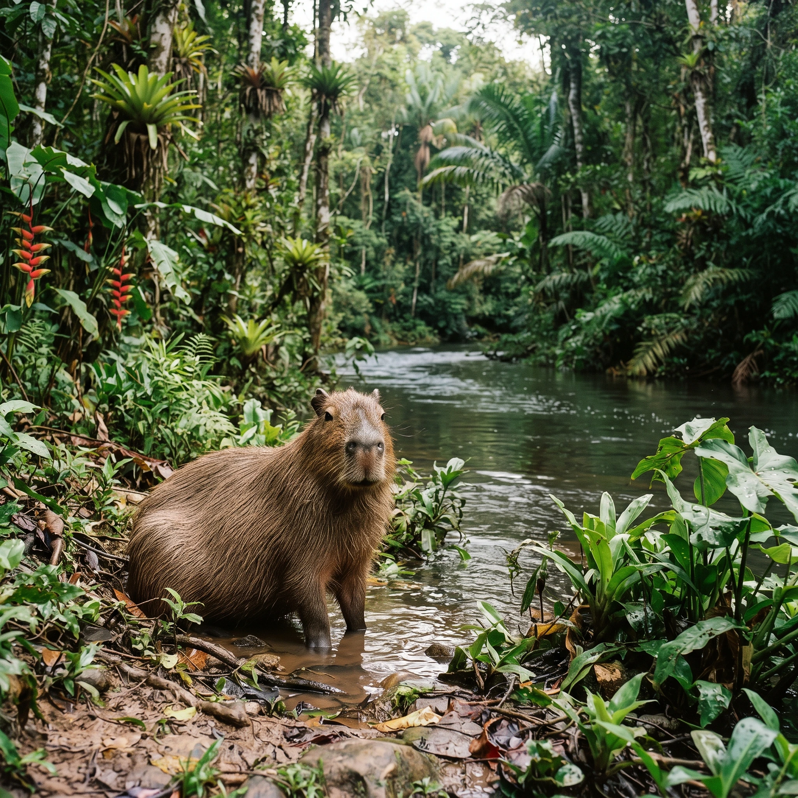

Bevezetés
Az esőerdőkben rengetek különös álllatfaj megtalálható, ez a z oldal bemutat néhányat a legújabb felfedezésekből

Beka
A trópusi esőerdők aljnövényzetének egyik legszínesebb és leglenyűgözőbb lakója a nyílméregbéka. Bár mérete csupán néhány centiméter, élénk kék, sárga vagy piros színei messziről hirdetik a ragadozóknak a mérgező voltát, amelyet a természetben elfogyasztott hangyákból és rovarokból nyernek. Az őslakos törzsek évszázadok óta használták ezen állatok bőrén található mérget a vadászathoz használt nyilaik hegyének bevonására.

Arara ara (Arapapagáj)
Az esőerdők lombkoronaszintjének egyik leglátványosabb és leghangosabb képviselője az arapapagáj. Hatalmas, élénkpiros, kék és sárga tollazata, valamint tekintélyes mérete miatt azonnal magára vonja a figyelmet. Rendkívül intelligens és társasági lény, amely élethosszig tartó párkapcsozatban él, és hangos rikácsolásával betölti a dzsungel levegőjét, miközben erős csőrével kemény dióféléket és magvakat roppant össze.

Lajhár
A lajhár az esőerdők leglassabb, mégis egyik legkedveltebb emlőse, amely szinte egész életét a fák ágain lógva tölti. Testhőmérséklete a környezet függvényében változik, energiatakarékos életmódja miatt pedig naponta akár 15-20 órát is alvással tölt. Zöldes árnyalatú bundáját mikroszkopikus algafajok népesítik be, ami tökéletes rejtő színt biztosít számára a lombok sűrűjében a ragadozók elől.ra.

Ocelot
A dél-amerikai esőerdők csúcsragadozója a fenséges Ocelot, amely a macskafélék közül harmadikként a legnagyobb termetű a világon. Kiválóan úszik, és nem ritka, hogy a folyók vizéből halakra vagy kajmánokra vadászik, de sűrű foltos bundája tökéletes álcázást biztosít az aljnövényzet fény-árnyék játékában. Rejtőzködő életmódja és magányos természete miatt rendkívül ritkán látható a vadonban, így az esőerdő egészségének egyik legfontosabb jelzője.

Tukán
A tukán a trópusi erdők jellegzetes madara, amelyet elsősorban hatalmas, színes és könnyű csőréről lehet felismerni. Bár a csőre hatalmasnak tűnik, méhsejt-szerkezetű belső szerkezete miatt meglepően könnyű, és kiválóan alkalmas a magas ágakon lévő gyümölcsök elérésére. Társas madárként kis csoportokban mozog a lombkoronaszintben, és fontos szerepet játszik a magvak szétszórásában és az erdő megújulásában.

Majom
A majmok – például a pókhajak vagy bőgőmajmok – az esőerdők legmozgékonyabb lakói, amelyek behálőzik a felső lombkoronaszintet. Hosszú, kapaszkodó farkuk szinte ötödik kézként funkcionál, amellyel magabiztosan lendülnek ágról ágra a legmagasabb fák között is. Hangos kiáltásaik kilométerekre elhallatszanak a dzsungelben, és fontos közösségi életet élnek összetett családi csoportokban.

Smaragd boa
A smaragd boa egy ragyogó zöld színű, fán lakó kígyófaj, amely lenyűgöző megjelenésével és fehér, geometriai mintázatával tökéletesen beleolvad az orchideák és levelek világába. Éjszakai ragadozóként nappal szorosan összetekeredve pihen egy vastag ágon, majd sötétedés után hőérzékelő szerveivel kutat kisemlősök és madarak után, amelyeket hatalmas szorítóerejével ejt el.

Kék morpho pillangó
A kék morpho pillangó az esőerdők egyik legkáprázatosabb rovara, amelynek szárnyai felül intenzív, fémes kék színben ragyognak, míg alul barna, szemet formáló mintákkal védekeznek a ragadozók ellen. Amikor repülés közben csapkod a szárnyaival, a fény villanásszerűen megcsillan a felületén, megzavarva ezzel a madarakat és más támadókat. Hernyó korában mérgező növényekkel táplálkozik, így maga is kellemetlen ízűvé válik a ragadozók számára.
Pirosszemű levelibéka
Ez a jellegzetes kétéltű a trópusi esőerdők éjszakai életének egyik legikonikusabb figurája, amelyet élénkpiros szemeiről és neon-zöld bőréről lehet felismerni. Nagy, vörös szemei hirtelen kinyitva elijesztik vagy összezavarják a rátámadó rovarevőket. Tapadókorongos lábain némán és biztosan mozog a nedves levelek hátoldalán, ahol napközben szinte láthatatlanul pihen.

Kapibara
A kapibara a világ legnagyobb rágcsálója, amely az esőerdők folyópartjain, mocsaras területein és árterein él. Kiváló úszó és búvár, amely veszély esetén a víz alá merülve rejtőzik el, úszóhártyás lábai pedig segítik a hatékony haladásban. Barátságos és békeszerető természetéről ismert, gyakran látható, amint békésen legel a vízparti növényzeten más állatok társaságában.